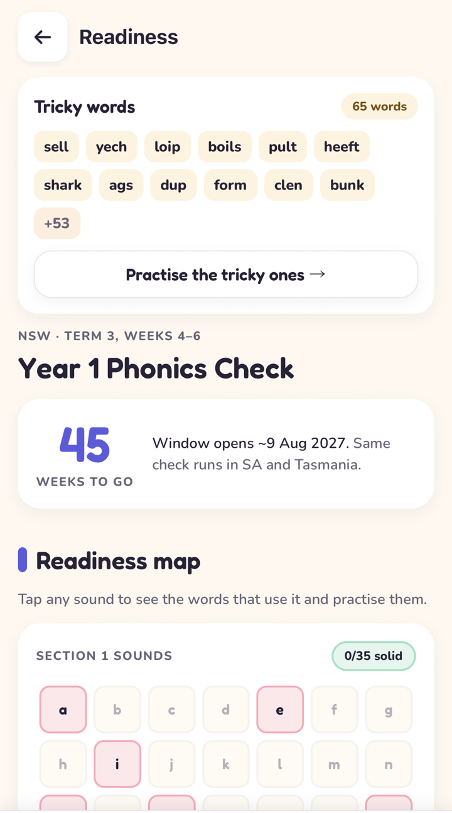

If your child started Year 1 this year, there's a good chance you've had a note home about a "phonics check" in Term 3 and not much explanation of what it is. Short version: it's a 40-word reading check, done one to one with the teacher, that tells the school whether your child can sound out words. It's copied almost exactly from the check England has run since 2012, and it's now mandatory in six states.
Where it's mandatory, and since when
| State / territory | Status | When |
|---|---|---|
| South Australia | Mandatory since 2018 (the first) | Term 3 |
| New South Wales | Mandatory since 2021 | Term 3, weeks 4 to 6 |
| Western Australia | Public schools since 2023 | Term 3 |
| Tasmania | Mandatory since 2023 | Term 3 |
| Queensland | Mandatory from Term 3 2025 | Term 3 |
| Victoria | Piloted 2025, mandatory from 2026 | Term 3 |
| ACT and NT | Voluntary (schools can use the free national check on the Literacy Hub) | School's choice |
New Zealand adopted a version in 2025 too, run at 20 and 40 weeks of school. So this isn't a passing fashion: it's becoming the standard way English-speaking systems check that early reading is on track.
Why now?
Because it worked in England. After twenty years of phonics-first reform there, England's reading results climbed while Australia's slid. The PISA 2025 results released in September 2026 were Australia's lowest reading result on record (still above the OECD average, but roughly two years of learning behind where our 15-year-olds were in 2000). The federal Education Minister pointed straight at England's approach, explicit teaching plus the Year 1 check, as the model. That's what the states are rolling out.
What's in the check
- 40 words, read aloud one at a time to the teacher. Around 5 to 10 minutes. Untimed, no writing.
- 20 real words and 20 made-up "alien" or "nonsense" words (vap, shup, dreem). The alien words check that a child is actually decoding rather than recognising words they've seen before. More on why in our alien words guide.
- Words get harder through the check: single sounds, then digraphs (sh, ai, oo), split digraphs (cake), consonant blends (stop) and two-syllable words.
- 28 out of 40 is the expected level in the Australian versions. (England's threshold is 32.)
How many kids meet it?
Fewer than you'd hope. In NSW, about 64% of Year 1 students met the expected level in 2025, which means roughly one child in three didn't. That's not because Australian six-year-olds can't learn to read. Many of those children had simply never been shown what decoding an unfamiliar word looks like, or had been taught to guess from the picture and the first letter. The check is designed to catch exactly that, early, while it's easy to fix.
Your school should share the result with you. A child who doesn't meet the level gets extra phonics support; nothing goes on a permanent record and it has no bearing on NAPLAN in Year 3. Treat it as a map of which sounds need work.
What to do at home
Ten minutes, a few times a week, from the start of Term 2 is plenty. Here's what actually moves the needle.
- Practise on real check papers. The Australian state papers are confidential, but England's past papers are public, use the same format and the same kinds of words, and are the best practice material there is. Phonogram Fun has all twelve built in.
- Do the alien words. Kids who read well often lose marks by "fixing" the alien word into a real one. Praise reading what's on the page.
- Sound out, don't guess. If your child looks at the first letter and the picture and takes a punt, gently cover the picture and reveal the word one phonogram at a time.
- Know the 70 phonograms. English has 26 letters but about 70 letter-sound combinations (igh, ough, ai, ee, ck...). If your child knows them, there are no surprises on the day. The app's readiness map shows which of the 70 they've got.
- Keep reading to them. Decoding gets them the words. Being read to gives them the vocabulary and the love of it.




Which phonics programme is my school using?
NSW public schools use the department's own phonics scope and sequence; many schools around the country use InitiaLit (MultiLit), Little Learners Love Literacy, Sounds-Write, Jolly Phonics or Read Write Inc. They all teach the same sounds in slightly different orders. The check doesn't care which programme your child did, only whether they can blend. So don't worry about matching the school's scheme at home: just make sure they can hear the sounds, know the phonograms and put them together.
Questions parents ask
When is the Year 1 Phonics Check held in NSW?
In Term 3, weeks 4 to 6. Other states also run it in Term 3; your school will tell you the exact week.
What score does my child need on the phonics check?
28 out of 40 is the expected level in the Australian versions of the check.
Is the phonics check compulsory in Victoria?
Yes. Victoria piloted the check in 2025 and it is mandatory in government schools from 2026, in Term 3.
Is the phonics check compulsory in Queensland?
Yes, from Term 3 2025, as part of Queensland's bilateral school funding agreement with the Commonwealth.
Can I get the actual NSW phonics check papers?
No, the state papers are confidential. England's past papers (which the Australian check is modelled on) are published, and Phonogram Fun includes all twelve of them, with the words sounded out on tap.
What if my child doesn't meet the expected level?
The school provides extra phonics support, usually in small groups. Nothing goes on a permanent record. Most children who miss the level are a few marks off and catch up quickly once the specific sounds they're missing are targeted.